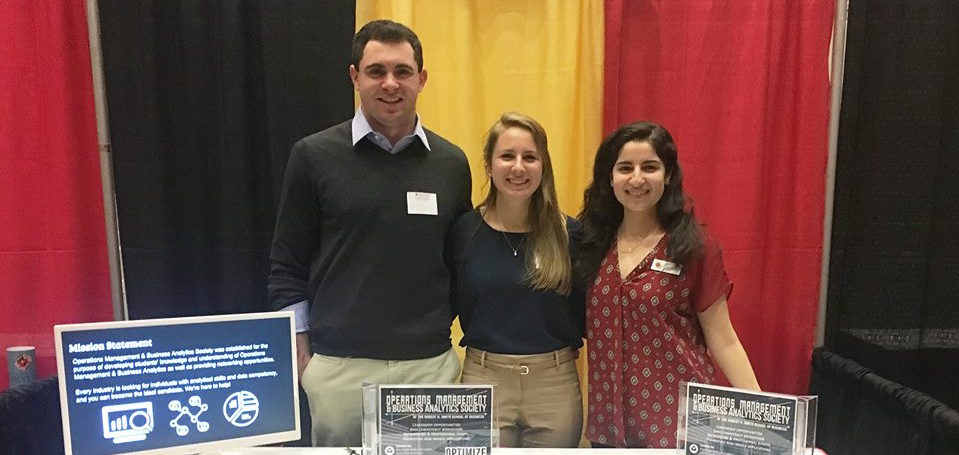

Extracurriculars

Microsoft One Week Hackathon
I was an active participant and leader in my hackathon project. The opportunity is that there are millions of windows laptops in public schools that have never connected to the internet. We partnered with Jp.ik to deliver education materials in collaboration with local governments. We did this by enabling offline content from a locally hosted WiFi access point. In addition, we can provide analytics from the edge device to track progress of the program. Watch the video I created for the project here. The project is still ongoing adn We are collaborating with Jp.ik and will be launching in 10 schools in Portugal.
Quality Enhancement Systems and Teams (QUEST) Honors Program
The Quality Enhancement Systems and Teams (QUEST) Honors Program is a multidisciplinary, hands-on program for University of Maryland undergraduates from three participating schools. Students participate in a challenging course of study that focuses on quality management, process improvement, and system design through teamwork and co-curricular programming. The program combines diverse knowledge, skills, and perspectives to enhance the professional and personal development of our students.
My very first consulting project was to improve the employee scheduling system for UMD's recreation center. My team developed deep understanding of business objectives and stakeholders to construct and pitch product vision. We then advanced excel functions to analyze shift trends. See our recommendations here.
Three years later, my team won the Capstone Award, winning both best poster and best project. Throughout the semester, we worked with Capterillar Inc. to investigate alternative authentication solutions for the company. Our research included a working prototype to simulate different authentication types and administering the test to over 200 caterillar employees. In addition, we created a feasibility matrix based off of online research and mined twitter data to analyze sentiment online. See our results here.
In addition to being part of this hands on program, I also worked as the Project Manager on the development team in order to enhance the program's website. My team worked on creating a calendar that can be used to keep track of important dates for students, faculty, alumni, and partners.
Operations Management and Business Analytics Society (OMBAS)
OMBAS is a student-run organization that seeks to inform students about the Operations Management & Business Analytics field and provide them with relevant events, speakers, and presentations. We provide useful resources to Operations majors as well as students thinking about joining our career field in order to enrich their understanding of this complex field of study.
I served as the Vice President of Events for this Organization. My role was to communicate with companies and speakers to plan events, site visits, networking nights, etc. My last semester as VP, I planned eight different events including a PepsiCo site visit, resume reviews, JP Morgan Networking event, and a case interview workshop with Accenture. Our club received awards from the Smith Undergraduate Association for Best Event of the Semester and Most Improved Organization.
Alpha Chi Omega Sorority
I was an active member of my sorority throughout my college career by participating in regular philanthropic events. I served on the Panhellenic Judicial Board in order to make decisions about appropriate sanctions based on guiding documents for chapters that had violated regulations. In addition, I served as a liaison to my chapter to inform them of how our community’s bylaws fit in.
First Year Innovation and Research (FIRE) Program
I collaborated with a professor to find ways to achieve resource, environment, and energy sustainability. We analyzing data collected from a variation of energy calculators used by consumers. Using this data, we developed, implemented, and evaluated interventions to induce investment in cost-effective energy efficient technologies.